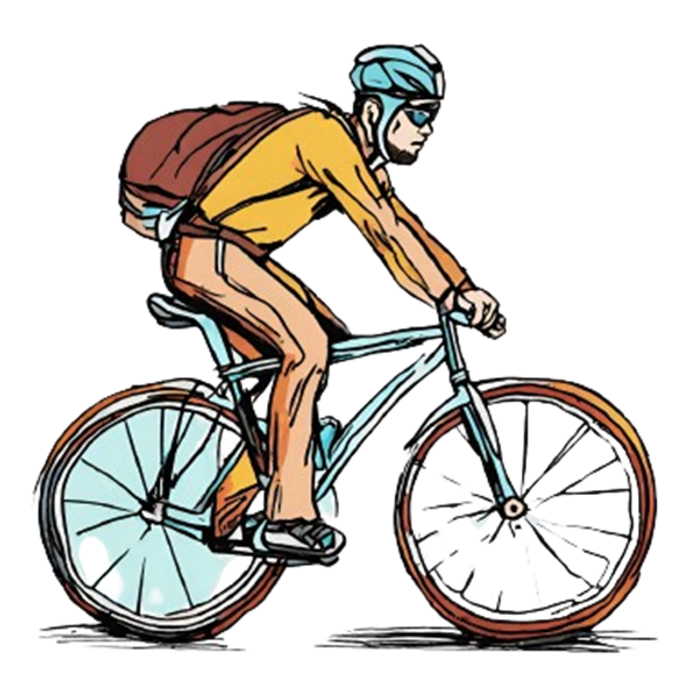

Seguridad en la carretera: Riesgo de accidentes al compartir la carretera con vehículos motorizados.
Fatiga y agotamiento: Posible fatiga durante paseos largos.
Lesiones por esfuerzo repetitivo: Posibles problemas físicos debido al ciclismo constante.
Contaminación del aire: Riesgo de exposición a la contaminación en áreas urbanas.
Mantenimiento: Necesidad de un mantenimiento regular de la bicicleta.

Nutrición e hidratación: Importancia de una alimentación adecuada y la hidratación.
Condiciones climáticas: Desafíos asociados al clima, como lluvia o viento.
Conflictos con otros usuarios: Tensiones con conductores, peatones u otros ciclistas.
Lesiones: Posibilidad de caídas y lesiones físicas.
Robo de bicicletas: Pérdida de la bicicleta por robo.